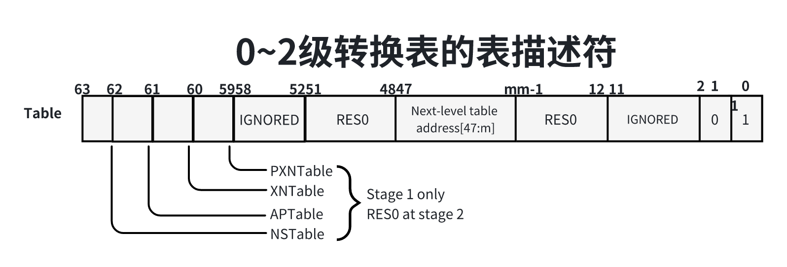

页表与页表缓存
一、统一的页表框架
页表用来把虚拟页映射到物理页，并且存放页的保护位，即访问权限。
在Linux4.1.1版本以前，Linux内核把页表分为4个级别：
1）页全局目录（Page Global Directory，PGD）；
2）页上层目录（Page Upper Directroy，PUD）；
3）页中间目录（Page Middle Diectory，PMD）；
4）直接页表（Page Table， PT）；
4.11版本吧页表扩展到五级，在页全局目录和页上层目录之间增加了页四级目录（Page 4th
Directory，P4D）。
各种处理器架构可以选择使用五级、四级、三级或两级页表，同一种处理器架构在页长度不同的情况可能选择不同的页表级数。可以使用配置宏CONFIG_PGTABLE_LEVELS配置页表的级数，一般使用默认值。
如果选择四级页表，那么使用页全局目录、页上层目录、页中间目录和直接页表；如果选择三级页表，使用页全局目录、页中间目录和直接页表；选择两级页表，使用全局目录和直接目录。
如果不使用页中间目录，那么内核在头文件“include/asm-generic/pgtable-bopmd.h”中模拟页中间目录，调用目录函数pmd_offset()根据页上层目录表项和虚拟地址获取页中间目录的时候，直接把页上层目录表项指针强制转换成页中间目录表项指针并返回，访问页中间目录表项实际上是在访问页上层目录表项。
x1typedef struct {pud_t pud;} pmd_t;2
3static inline pmd_t * pmd_offset(pud_t * pud, unsigned long address)4{5 return (pmd_t *)pud;6}同样，如果不使用页上层目录，那么内核在头文件“/include/asmgeneric/pgtable-nopud.h”中模拟页上层目录，前面四级页表的表项存放下一级页表的起始地值，直接页表的表项存放页帧号（Page Frame Number， PFN）。

内核也有一个页表，0号内核线程的进程描述符init_task的成员active_mm指向内核描述符init_mm，内存描述符init_mm的成员pgd指向内核的页全局目录swapper_pg_dir。
虚拟地址被分解成6部分：页全局目录索引、页四级目录索引、页上层目录索引、页中间目录索引、直接页表索引和页内偏移。
查询页表，把虚拟地址转换成物理地址的过程如下：
1）根据页全局目录的起始地址和页全局目录索引得到页全局目录表项的地址，然后从表项得到页四级目录的起始地值。
2）根据页四级目录的起始地址和页四级目录索引得到页四级目录表项的地址，然后从表项得到页上层目录的起始地值。
3）根据页上层目录的起始地址和页上层目录索引得到页上层目录表项的地址，然后从表项得到页中间目录的其实地址。
4）根据页中间目录的起始地值和页中间目录索引得到页中间目录表项的地址，然后从表项 得到直接页表的起始地址。
5）根据直接页表的其实地址和直接页表索引得到页表项的地址，然后从表项得到页帧号。
6）把页帧号和页内偏移组成物理地址。
内核定义了各级页索引在虚拟地址中的偏移：宏PAGE_SHIFT是页内偏移的位数，也是直接页表索引的偏移；宏PMD_SHIFT是页中间目录索引的偏移；宏PUD_SHIFT是页上层目录索引的偏移；宏P4D_SHIFT是页四级兖索引的偏移；红糖PGDIR_SHIFt是页全局目录索引的偏移。
内核定义了各级页表表项描述的地址空间的大小：宏PGDIR_SIZE是一个页全局目录表项映射的地址空间的大小；宏P4D_SIZE是一个页四级目录表项映射的地址空间的大小；宏PUD_SIZE是一个页上层目录表项映射的地址空间的大小；宏PMD_SIZE是一个页中间目录表项映射的地址空间的大小；宏PAGE_SIZE是一个直接页表映射的地址空间的大小，也是页的长度。
内核定义了各级页表能存放的指针数量，即表项数量：PTRS_PER_PGD是页全局目录的表项数量；PTRS_PER_P4D是页四级目录的表项数量，PTRS_PER_PUD是页上层目录的表项数量；PTRS_PER_PMD是页中间目录的表项数量；PTRS_PER_PTE是直接诶页表的表项数量。
内核定义了各级页表占用的页的阶数：PGD_ORDER是一个页全局目录占用的页的阶数；P4D_ORDER是一个页四级目录占用的页的阶数；PTE_ORDER是一个直接页表占用的页的阶数。
页全局目录表项的数据结构是pgd_t；页四级目录表项的数据结构是p4d_t；页上层目录表项的数据机构是pud_t；页中间目录表项的数据结构是pmd_t；直接页表的数据机构是pte_t。这些数据结构通常舒只包含一个无符号长整数的结构体，例如页全局目录表项目的定义如下：
11typedef struct ({unsigned long pgd;}) pgd_t;以页全局目录为例，内核定义了以下宏和内联函数。
1）宏pg_val()用来把pgd_t类型转换成无符号长整数；
112）宏__gpd()用来把无符号长整数转换成pgd_t类型；
113）宏pgd_index(address)用来从虚拟地址分解出页全局目录索引；
114）宏pgd_offset(mm, addr)用来返回指定进程的虚拟地址对应的页全局目录表项的地址。
内核定义了宏“pgd_offset(address)”，用来在内核的页全局目录找到虚拟地址对应的表项：
115）内联函数pgd_none(pgd)用来判断页全局目录表项是空表项，空表项没有指向下一级页表，如果是空表项，那么返回非零值。
6）内联函数pgd_present(pgd)用来判断页全局目录表项是否存在，即是否指向洗衣机页表，如果表项指向下一级页表，那么返回非零值。
前四级页表的表项存放下一级页表的其实地址，直接页存放页帧号和标志位。大多数处理器支持的最小页的长度是4KB，有些处理器支持1KB的页长度，可以使用页帧号以外的为作为标志位。
不同处理器架构的页表项的个数不同，为了屏蔽差异性，每中处理器架构自定义访问的宏或内联函数：宏pte_pfn(x)从页表取出页帧号，宏pfn_pte(pfm, prot)把页帧号和标志位组合成页表项。
有些标志位要求每种处理器架构都是必须实现的，每种处理器定义宏或内联函数来访问这些标志位，例如：
1）pte_present(pte)检查页是否在内存中，如果不在内存中，说明页被换出的交换区；
2）pte_write(pte)检查页是否可写的；
3）pte_young(pte)检查页是否可以被访问的；
4）pte_dirty(pte)检查页时不是脏页，即页的数据是不会被修改过的。
各种处理器架构也是可以定义私有的标志位。
二、ARM64处理器的页表
ARM64处理器把页表称为转换表（translation table），最多4级。ARM64处理器支持3种页长度：4KB、16KB和64KB。页长度和虚拟地址的宽度决定了转换表的级数，如果虚拟地址的宽度是48位，页长度和转换表级数的管辖如下所示。
1）页长度是4KB：使用4级转换表，转换表和内核的页表属于的 对应关系是：0级转换表对应页全局目录，1级转换表对应上层目录，2级转换表对应页中间目录，3级转换表对应直接页表。
48位虚拟地址组成部分如下图所示：
每级转换表占用一页，有512页，索引是48位虚拟地址的9个位。
2）页长度是16KB：使用4级转换表，转换表和内核的页表属于的对应关系是：0级转换表对应页全局目录，1级转换表对应上层目录，2级转换表对应中间目录，3级转换表对应直接页表。
48位虚拟地址分解位下图所示：
0级转换表有2项，索引是48位虚拟地址的最高位；其他转换表占用一页，有2048项，索引是48位虚拟地址的11个位。
3）页长度是64KB：使用3级转换表，转换表和内核的页表属于的对应关系是：1级转换表对应应用层全局目录，2级转换表对应中间目录，3级转换表对应直接页表。
48位虚拟地址被分解位下图所示：
1级转换表有64项，索引是48位虚拟地址的最高6位；其他转换表占用一页，有8192项，索引48位虚拟地址的13个位。
ARM64处理器把表项称为描述符（descriptor），使用64位的长描述符格式。描述符的第0位指示描述符不是有效的：0表示无效，1表示有效；第1位指定描述符类型，如下：
1）在第0~2级转换表中，0表示块（block）描述符，1表示表（table）描述符。块描述符存放一个内存块（即巨型页）的起始地址，表描述符存放下一级转换表的地址。
2）在第3级转换表中，0表示保留描述符，1表示页描述符。
第0~2级转换表的描述符分为3种：
1）无效描述符：无效描述符的第0位是0，格式如下图所示：
2）块描述符：块描述符的最低两位是01。当虚拟地址的位数是48时，块描述符的格式如下图所示：
n的取值：如果页长度是4KB，那么1级描述符的n是30，2级描述符的n是21；如果页长度是16KB，1级描述符n是25，2级描述符的n是29。
3）表描述符：表描述符的最低两位是11，当虚拟地址的位数是48时，表描述符的格式如下图所示：

m的取值：如果页长度是4KB，m是12；如果页长度是16KB，m是14；如果页长度是64KB，m是16。
注意“下一级表地址”是下一级转换表的物理地址，为什么使用物理地址，不使用虚拟地址？因为ARM64处理器支持转换表遍历（translation table walk）：当ARM64处理器的内存管理单元需要把虚拟地址转换成物理地址时，首先在页表缓存中匹配虚拟地址，如果没有匹配，那么处理器访问内存中的转换表，把最后一级转换表项复制到页表缓存。使用物理地址，可以变处理器访问的转换表需要把转换表的虚拟地址转换成物理地址。
第3级转换表的描述符分为3种：
1）无效描述符：无效描述符的第0位是0，格式如下图所示：
2）保留描述符：保留描述符的最低两位是01，现在没有使用，保留给将来使用，格式如下如所示：
3）页描述符：页描述符的最低两位是11，当虚拟地址的位数是48时，页长度分配时4KB、16KB和64KB的页描述符的格式如下图所示：
在块描述符和页描述符中，内存属性被拆分成一个高属性块和一个低属性块，如下图所示：
第59~62位：基于页的硬件属性（Page-Based Hadrdware Attributes PBHA），如果没有实现ARMV8.2-TTPBHA，忽略。
第55~58位：保留给软件使用。
第54位：在异常级别0，表示UXN（Unprivileged execute-Never），即不允许异常级别0执行内核代码；在其他异常级别，表示XN（execute-Never），不允许执行。
第53位：PXN（Privileged executed-Never），不允许在特权级别（异常级别1、2、3）执行。
第52位：连续（Contiguous），指示这条转换表项属于一个连续表项集合，一个连续表项集合可以被缓存在一条TLB表项里面。
第51位：脏位修饰符（Dirty Bit Modifilter, DBM），表示页或内存块是否被修改过。
第11位：非全局修饰符（not global， nG）。nG位是1，表示转换不是全局，是进程私有的，有一个关联的地址空间标识符（Address Space Identifier）；nG位是0，表示转换时全局的，是所有进程共享的，内核页或内存块是所有进程共享的。
第8~9位：可共享性（SHarebility ，SH），00表示不共享，01是保留值，10表示外部共享，11表示内部共享。
第6~7位：AP[2:1]（Data Access Permissions， 数据访问权限）。在阶段1转换中，AP[2]用来选择只读或读写，1表示只读；AP[1]用来选择是否允许异常级别0访问，1表示允许异常级别0访问，0表示不允许异常级别0访问。例如AP[2:1]为00，表示允许从异常级别1、2、3读写，不允许从异常级别0访问；AP[2:1]为01，表示允许从异常级别1、2、3读写，允许从异常级别0读写。在非安全异常级别1和0表示允许从异常级别1、2、3读写，语出从异常级别0读写。 在非安全异常级别1和0表示转换机制的阶段2转换中，AP[2:1]为00表示不允许访问，01表示只读，10表示只写，11表示读写。
第5位：非安全（Non-Secure NS）。对于安全状态内存访问，指定输出地址在安全地址映射还是在非安全地址映射。
第2~4为：内存属性索引（memory attrbute index, AttrIndex），指定寄存器MAIR_ELx中内存属性字段索引，内存属性简介寄存器（Memory Attribute INdirection Register MAIR_ELx）有8个8位内存属性字段：Attr
，n等于0~7。
三、页表缓存
处理器的内存单元（Memory Management Unit MMU）负责把虚拟地址转换成物理地址，为了改进虚拟地址到物理基地址的转换速度，避免每次转换都需要查询内存中页表，处理器厂商在内存管理单元增加了一个称为TLB（Translation Lookaside Buffer）的高速缓存，TLB直接翻译为后备缓冲区，就是页表缓存。
页表缓存用来缓存最近使用的页表项，有些处理器使用两级页表缓存：第一级TLB分为指令TLB和数据TLB，好处是取指令和取数据可以并行执行；第二季TLB是统一TLB（Unified TLB）即指令和数据共用的TLB。
TLB表项格式
不同处理器架构的TLB表项的格式不同。ARM64处理器的每条TLB表项不仅包含虚拟地址和物理地址，页包含内存类型、缓存策略、访问权限、地址空间标识符（Address Space Identifier ASID）和虚拟机标识符（Virtual Machine Identifier，VMID）。地址空间标识符区分不同进程的页表项，虚拟机标识符区分不同虚拟机的页表项。
TLB管理
如果内核修改了可能缓存在TLB里面的表项，那么内核必须负责使旧的TLB表项失效，内核定义了每种处理器必须实现的函数如下表所示：
| 函数 | 说明 |
|---|---|
| void flush_tlb_all(void); | 使所有TLB表失效 |
| void flush_tlb_mm(struct mm_struct *mm); | 使指定用户地址空间的所有TLB表项失效，参数mm是进程的内存描述符。 |
| void flush_tlb_range(struct vm_area_struct *vma, unsigned long start, unsigned long end); | 使指定用户地址空间的某个范围的TLB表项失效参数vma是虚拟内存区域，start是起始地址，end是阶数地址（不包括）。 |
| void flush_tlb_page(struct vm_area_struct *vma, unsigned long uaddr); | 使指定用户地址空间里面的指定虚拟页的TLB表项失效参数vma是虚拟内存区域，uaddr是一个虚拟页中的任意虚拟地址。 |
| void flush_tlb_kernel_range(unsigned long start, unsigned long end); | 使内核的某个虚拟地址范围的TLB表项失效参数start是起始地址，end是阶数地址（不包括）。 |
| void update_mmu_cache(struct vm_area_struct *vma, unsigned long address, pte_t *ptep); | 修改页表项以后吧页表项设置到页表缓存由软件管理页表缓存的处理器必须实现函数，丽日MIPS处理器，ARM64处理器的内存管理单元可以访问内存中页表，把页表复制到页表缓存，所以ARM64架构的函数update_mmu_cache什么都不用做 |
| void tlb_migrate_finish(struct mm_struct *mm); | 内核把进程从一个处理器迁移到另一个处理器以后，调用该函数以更新页表缓存或上下文特定信息 |
当TLB没有命中的时候，ARM64处理器的内存管理单元自动便利内存中的页表，把页表复制到TLB，不需要软件把页表写到TLB，所以ARM64架构没有提供写TLB的指令。
ARM64架构提供了一条TLB失效指令：
11TLBI <type><level><IS>{IS}{, <Xt>}字段说明：
字段
的常见选项如下： ALL：所有表项；
VMALL：当前虚拟机的阶段1的所有表项，即表项的VMID是当前虚拟机的VMID。虚拟机里面运行的客户操作系统地址转换成物理地址分两个阶段：第1阶段吧虚拟地址转换成中间物理地址，第2阶段把中间的物理地址转换成物理地址。
VMALLS12：当钱虚拟机的阶段1和阶段2的所有表项。
ASID：匹配寄器Xt指定的虚拟地址和ASID的表型。
VA：匹配寄存器Xt指定的虚拟地址并且ASID可以是任意值的表项。
VAA：匹配寄存器Xt指定的虚拟地址并且ASID可以是任意值的表项。
字段
指定异常级别，取值如下： E1：异常级别1。
E2：异常级别2。
E3：异常级别3。
字段IS表示内部共享（InnerShareable），即多个核共享。如果不使用字段IS表示非共享，只被一个核使用。在SMP系统中，如果指令TLBI不屑地字段IS，仅仅使当前核的TLB表项失效；如果指令TLBI携带字段IS，表示使所有核的TLB表项失效。
字段Xt是X0 ~ X31中的任意一个寄存器。
例如ARM64内核实现了函数flush_tlb_all，用来使所有核的所有TLB表项失效，其代码如下：
91// 位置：arch/arm64/include/asm/tlbflush.h23static inline void flush_tlb_all(void)4{5dsb(ishst);6__tlbi(vmallelis);7dsb(ish);8isb();9}把宏展开以后是：
71static inline void flush_tlb_all(void)2{3asm vlatile("dsb ishst" ::: "memory");4asm ("tlbi vmallelis" ::);5asm volatile ("dsb ish "::: "memory");6asm volatile("isb" ::: "memory");7}dsb ishst：确保屏障前面的存储指令执行完。dsb是数据同步屏障（Data Synchronization Barrier）,ishst中的ish表示共享域是内部共享（inner shareable），st表示存储（store），ishst表示素具同步屏障指令对所有核的存储指令起作用。
tlbi vmalle lis：使所有核上匹配当前VMID、阶段1和异常级别1的所有TLB表项失效。
dsb ish：确保前面的TLB失效指令执行完，ish表示数据同步屏障指令对所有核起作用。
isb：isb是指令同步屏障（Instruction Synchronization Barrier），这条指令冲刷处理器的流水线，重新读取屏障指令后面的所有指令。
可以对比下，ARM64内核实现了函数local_flsuh_tlb_all，用来使当前所有TLB表项失效，代码如下：
91// 位置：arch/arm64/include/asm/tlbflush.h23static inline void local_flush_tlb_all(void)4{5dsb(nshst);6__tlbi(vmalle1);7dsb(nsh);8isb();9}和函数flush_tlb_all区别如下：
1）指令dsb中的字段ish换成了nsh，nsh是非共享（non-shareable），表示数据同步屏障指令仅仅在当前核起作用。
2）指令tlbi没有携带字段is，表示仅仅使用当前核TLB表项失效。
地址空间标识符
为了减少在进程切换时清空页表缓存的需求，ARM64处理器的页表缓存使用非全局（not global, nG）位区分内核和进程页表项（nG位位0表示内核的页表项），使用地址空间标识符（Address Space Identifier， ASID）区分不同进程的页表项。
ARM64处理器的ASID长度是由具体实现定义的，可以选择8位或者16位，寄存器ID_AA64MMFR0_EL1（AArch64内存模型特性寄存器0，AArch64 Memory Model Feature Register 0）的字段ASIDBits存放处理器支持的ASID长度。如果具体实现支持16位ASID，那么可以使用寄存器TCR_EL1（转换控制寄存器， Translation Control Register）的AS（ASID Size）位控制实际使用的ASID长度。如果把AS位设置成0，表示使用8位ASID，否则表示使用16位ASID。
寄存器TTBR0_EL1（转换表基准寄存器0， Translation Table Base Regsiter 0）或TTBR1_EL1都可以用来存放当前进程的ASID，寄存器TCR_EL1的A1位巨鼎使用哪个寄存器存放当前进程ASID，通常使用寄存器TTBR0_EL1的位[63:48]存放当前进程的ASID（如果使用8位ASD， 那么寄存器TTBR0_EL1的位[63:56]是保留位），位[47:1]存放当前进程的页全局目录的物理地址。
在SMP系统中，ARM64架构要求ASID在处理器的所有核上是唯一的。
为了方便描述，假设ASID长度是8位，ASID只有256个值，其中0是保留值。可分配的ASID范围是1~255，进程的数量肯呢个超过255，两个进程的ASID可能相同，怎么解决这个问题？内核引入ASID版本号，解决方法如下：
1）每个进程有一个64位的软件ASID，低8位存放硬件ASID，高56位存放ASID版本号。
2）64位全局变量asid_generation的高56位保存全局ASID版本号。
3）当进程被调度时，比较进程的ASID版本号和全局ASID版本号。如果版本号相同，那么直接使用上次分配的硬件ASID，否则需要给进程重新分配硬件ASID。
a）如果存在空间的硬件ASID，那么选择一个分配个进程。
b）如果没有空闲的硬件ASID，那么把全局ASID版本号加1，重新从1开始分配硬件ASID，即硬件ASID从255回绕到1。因为刚分配的硬件ASID可能和某个进程的硬件ASID相同，只有ASID版本号不同，页表缓存可能包含了这个进程的页表项，所以必须把我所有处理器的页表缓存清空。
引入ASID版本号的好处是：避免每次进程切换都需要清空页表缓存，只需要在硬件ASID回绕时把处理器的页表缓存清空。
内存描述符的成员context存放架构特定的内存管理上下文，数据类型是结构体mm_context_t，ARM64架构定义的结构体如下，成员id存放内核给进程分配的软件ASID。
71// 位置：arch/arm64/include/asm/mmu.h23typedef struct{45atomic64_t id;6...7}mm_context_t;全局变量asid_bits保存ASID长度，全局变量asid_generation的高56位保存全局ASID版本号，位图asid_map记录哪些ASID被分配。
每处理器变量active_asids保存处理器正在使用的ASID，即处理器正在执行的进程ASID；每处理器变量reserved_aids。存放保留的ASID，用来在全局ASID分配完了，那么把全局ASID版本号加1，重新从1开始分配ASID，针对每个处理器，使用该处理器的reserved_asids保存该处理器正在执行的进程的ASID，并且把该处理器的actice_asids设置为0。actice_asids为0具有特殊含义，说明全局ASID版本号变化，ASID从255回绕到1。
当全局ASID版本号加1时，每个处理器需要清空页表缓存，位图tlb_flush_pending保存需要清空页表缓存的处理器集合。
91// 位置：arch/arm64/mm/context.c23static u32 asid_bits;4static atomic64_t asid_generation;5static unsigned long *asid_map;67static DEFINE_PER_CPU (atomic64_t, actice_asids);8static DEFINE_PER_CPU (u64, reserved_asids);9static cpumask_t tlb_flush_pending;当进程被调度时，函数check_and_switch_context负责检查是否需要给进程重新分配ASID，代码如下：
581// 流程： __schedule()->context_switch()->switch_mm_irqs_off()2// ->switch_mm()->check_and_switch_context()34// 位置：arch/arm64/mm/context.c56void check_and_switch_context(struct mm_struct *mm, unsigned int cpu)7{8unsigned long flags;9u64 asid;1011asid = atomic64_read(&mm->context.id);1213lush_context).14/**15* 如果进程ASID版本号和全局ASID版本号相同，那么调用函数atomic64_xchg_relaxed16* 把当前处理器的actice_asids设置成进程的ASID，并且返回actie_asids的旧值。如果17* active_asids的旧值不是0，那么执行快速路径，跳转到标号switch_mm_fastpath去设置18* 寄存器TTBR0_EL1。如果actice_asids的旧值是0，说明其他处理器在分配ASID时把全局ASID19* 版本号加1，那么执行慢速路径。在当前处理器执行代码“!((asid^atome64_read (&asid_generation)) >> asid_bits)”20* 和代码“atomic64_xchg_relaxed(&per_cpu(active_asids, cpu), asid)”之间，其他处理器可能在分配ASID21* 时把全局ASID时把全局ASID版本号加122*/23if (!((asid ^ atomic64_read(&asid_generation)) >> asid_bits)24&& atomic64_xchg_relaxed(&per_cpu(active_asids, cpu), asid))25goto switch_mm_fastpath;2627// 进制硬终端并且申请自旋锁cpu_asid_lock28raw_spin_lock_irqsave(&cpu_asid_lock, flags);29/* Check that our ASID belongs to the current generation. */30asid = atomic64_read(&mm->context.id);31// 在申请自旋锁cpu_asid_lock之后重新比较进程的ASID版本号和全局ASID版本号，32// 如果进程的ASID版本号和全局ASID版本号不同，就调用函数new_context给进程重新分配ASID33if ((asid ^ atomic64_read(&asid_generation)) >> asid_bits) {34asid = new_context(mm, cpu);35atomic64_set(&mm->context.id, asid);36}3738// 如果位图tlb_flush_pending中当前处理器对应的位被设置，那么把当前处理器的页表39// 缓存清空。当全局ASID版本号加1使，需要把所有处理器的页表缓存清空，40// 在位图tlb_flush_pending中把所有处理器对应的位设置41if (cpumask_test_and_clear_cpu(cpu, &tlb_flush_pending))42local_flush_tlb_all();4344// 把当前处理器的actice_asids设置为进程的ASID45atomic64_set(&per_cpu(active_asids, cpu), asid);46// 释放自旋锁cpu_asid_lock并且开启硬中断47raw_spin_unlock_irqrestore(&cpu_asid_lock, flags);4849switch_mm_fastpath:50// 如果不需要通过切换寄存器TTBR0_EL1仿真PAN特性，那么调用函数cpu_switch_mm51// shezhi jicunqi TTBR0_EL1，否则延迟到进程从内核模式返回用户模式时设置寄存器TTBR0_EL1。52// PAN(Privileged Access Never)特性用来禁止内核访问用户虚拟地址。 如果处理器不支持PAN特性53// 那么内核通过切换寄存器TTBR0_EL1仿真PAN特性：在进程进入内核模式时，把寄存器TTBR0+EL1设置为54// 保留的地址空间标识符0和内核的页全局目录（swapper_pg_dir）后面的保留区域的物理地址；55// 在进程退出内核模式时。把寄存器TTBR0_EL1设置为进程的地址空间标识符和页全局目录的物理地址。56if (!system_uses_ttbr0_pan())57cpu_switch_mm(mm->pgd, mm);58}函数new_context负责分配ASID，代码如下：
451// 位置：arch/asm64/mm/context.c234static u64 new_context(struct mm_struct *mm, unsigned int cpu)5{6static u32 cur_idx = 1;7u64 asid = atomic64_read(&mm->context.id);8u64 generation = atomic64_read(&asid_generation);910if (asid != 0) {11u64 newasid = generation | (asid & ~ASID_MASK);1213// 如果进程已经有ASID，并且进程的ASID是保留ASID，那么继续使用原来的ASID 只需要更新ASID版本号14if (check_update_reserved_asid(asid, newasid))15return newasid;1617asid &= ~ASID_MASK;18// 如果进程已经有ASID，并且ASID在位图中是空闲的，那么继续使用原来的ASID，只需要更新ASID版本号19if (!__test_and_set_bit(asid, asid_map))20return newasid;21}2223// 从上一次分配的ASID开始分配ASID，如果存在空闲的ASID，那么分配给进程24// 然后跳转到28行的标号set_asid去设置ASID位图25asid = find_next_zero_bit(asid_map, NUM_USER_ASIDS, cur_idx);26if (asid != NUM_USER_ASIDS)27goto set_asid;2829// 如果ASID已经分配完，那么把全局ASID版本号加130generation = atomic64_add_return_relaxed(ASID_FIRST_VERSION,31&asid_generation);32// 重新初始化ASID分配状态33flush_context(cpu);3435// 从1开始分配ASID36asid = find_next_zero_bit(asid_map, NUM_USER_ASIDS, 1);3738set_asid:39// 为刚分配的ASID在位图中设置已分配的标志40__set_bit(asid, asid_map);41// 使用静态变量curr_idx记录刚分配的ASID，下次分配ASID时从这次分配的ASID开始查找42cur_idx = asid;43// 返回ASID和版本号44return asid | generation;45}函数flush_context负责重新重新初始化ASID分配状态，代码如下：
291// 位置：arch/arm64/mm/context.c23static void flush_context(unsigned int cpu)4{5int i;6u64 asid;78// 把AISD位图清零9bitmap_clear(asid_map, 0, NUM_USER_ASIDS);1011set_reserved_asid_bits();1213smp_wmb();1415// 把每个处理器的actice_asids设置为0，active_asids为0具有特殊含义，16// 说明全局ASID版本号变化，ASID回绕。然后把每个处理器正在执行的进程的ASID设置为保留ASID17// 为保留ASID在ASID位图中设置已分配的标志18for_each_possible_cpu(i) {19asid = atomic64_xchg_relaxed(&per_cpu(active_asids, i), 0);2021if (asid == 0)22asid = per_cpu(reserved_asids, i);23__set_bit(asid & ~ASID_MASK, asid_map);24per_cpu(reserved_asids, i) = asid;25}2627// 所有处理器需要清空页表缓存，在位图tlb_flush_pending中设置所有处理器对应的位28cpumask_setall(&tlb_flush_pending);29}
虚拟机标识符
虚拟机里面运行的客户操作系统的虚拟地址转换成物理地址分为2个阶段：第1阶段把虚拟地址转换成中间物理地址，第2阶段把中间物理地址转换成物理地址。第1阶段转换由客户操作系统的内核控制，和非虚拟化的转换过程相同。第2阶段转换由虚拟机监控器控制，虚拟机监控器为每个虚拟机维护一个转换表，分配一个虚拟机标识符（Virtual Machine Identifer , VMID），寄存器VTTBR_EL2（虚拟机转换表基准寄存器， Virtualization Translation Table Base Register）放在当前虚拟机的阶段2转换表的物理基地址。每个虚拟机由独立的ASID空间，页表缓存使用虚拟机标识符区分不同虚拟机的转换表项，可以避免每次虚拟机切换到要清空表缓存，只需要在虚拟机标识符回绕时把处理器的页表缓存清空。
ARM64处理器的VMID长度具体实现定义的，可以选择8位或者16位，寄存器ID_AA64MMFR0_EL1的字段VMIDBits存放处理器支持VMID长度。如果具体实现支持16位VMID，可以使用寄存器VTCR_EL2（虚拟化转换控制寄存器， Virtualization Translation Control Register）的VS(VMID Size)位控制实际使用的VMID长度。如果把VS位设置成0，表示用8位VMID，否则表示使用16位VMID。
寄存器VTTBR_EL2的位[63:48]存放正在运行的虚拟机标识符，如果使用8位VMID那么寄存器VTTBR_EL2的位[63:56] 是保留位。